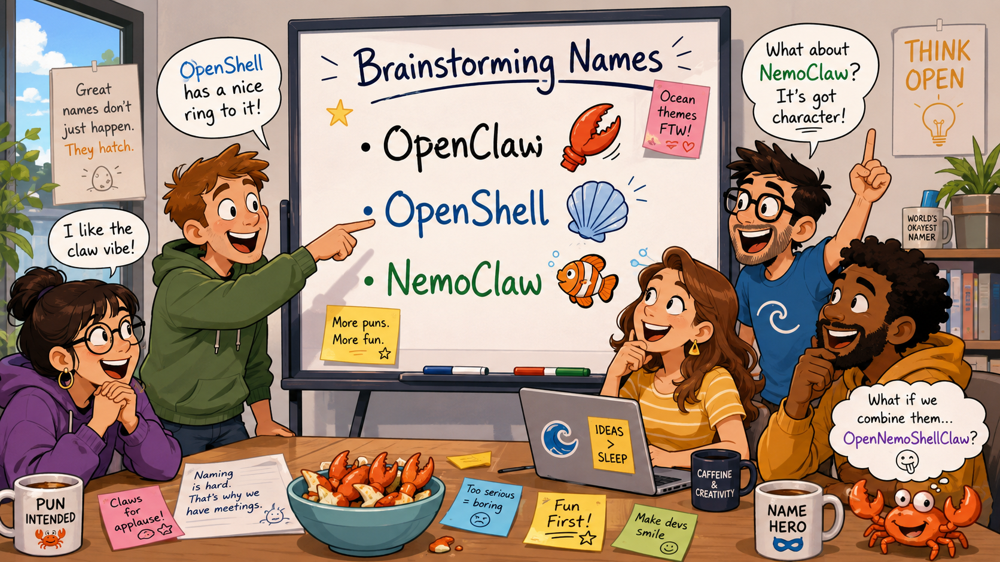

In March 2026, NVIDIA announced two open-source projects at GTC: OpenShell and NemoClaw. Both are designed to address a structural problem that has no clean software fix: AI agents need broad access to credentials, files, and networks to be useful, and that same access makes them a significant security risk. The architecture NVIDIA has built is genuinely interesting. The strategy behind the branding raises questions worth asking.
The Problem Is Structural
OpenClaw, the open-source AI agent harness built by Austrian developer Peter Steinberger, became one of the fastest-growing software projects in recent memory. It surpassed React's GitHub star count in 60 days, a milestone React took 13 years to reach, eventually becoming the most-starred project in GitHub history. Jensen Huang called it "the next ChatGPT." Microsoft, Tencent, and Alibaba launched competing or derivative products. The Chinese government restricted state agencies from using it.
It also surfaced a structural security problem that no patch fully resolves.
OpenClaw had well-documented vulnerabilities in its early releases. CVE-2026-25253, a one-click remote code execution flaw rated CVSS 8.8, allowed any malicious website to hijack an active session via WebSocket and execute arbitrary shell commands on the victim's machine. It was patched in version 2026.1.29 before public disclosure.
But as security researchers at Penligent have documented, the patched CVE is not the core issue. Any agent that can access your email, file system, API keys, and cloud resources is a high-value target by design. And behavioral guardrails that run inside the agent process can always be overridden by a compromised agent. Recognition, as one researcher put it, is not restraint.
That is the structural gap OpenShell is built to address.
What OpenShell Actually Does
OpenShell enforces policy outside the agent's own process. According to NVIDIA's own documentation, a compromised agent cannot disable its own constraints because it does not control them. The policy layer sits beneath it at the OS level, enforced by Linux kernel primitives.
The four enforcement domains:
- Filesystem: Access locked at sandbox creation, kernel-enforced
- Network: L7 proxy enforcing policy at the HTTP method and path level, hot-reloadable at runtime without restarting the sandbox
- Process: Privilege escalation blocked at the container level
- Inference: A privacy router that strips caller credentials and routes sensitive inference calls to local models, keeping regulated data off external cloud endpoints
The credential provider system is a meaningful structural improvement. API keys are injected as environment variables at runtime and never written to the sandbox filesystem. That directly addresses one of the most common failure modes in current agent deployments.
OpenShell is also broader than its NemoClaw association implies. According to NVIDIA's supported agents documentation, it runs Claude Code, Codex, OpenCode, and GitHub Copilot CLI natively in the base sandbox image. OpenClaw and Ollama are available as community sandbox images. The runtime is agent-agnostic at the infrastructure level.
NemoClaw is the higher-level reference stack built on OpenShell, with guided onboarding, hardened blueprints, and lifecycle management through a single CLI. Its GitHub repository now describes it as a stack for running "Hermes, LangChain Deep Agents, and OpenClaw" more securely, reflecting expansion beyond OpenClaw as the sole supported harness.
NVIDIA is doing all of this in direct collaboration with Steinberger and the OpenClaw Foundation, co-presented at GTC. That matters for evaluating the intent.
The Maturity Gap
The architecture is well-conceived. The tooling is explicitly not production-ready.
NVIDIA's own documentation states: "NemoClaw is in alpha. Do not use this software in production environments. APIs, configuration schemas, and runtime behavior are subject to breaking changes between releases." OpenShell describes itself as "proof-of-life: one developer, one environment, one gateway."
The projects have attracted substantial developer interest. NemoClaw has 21,800 GitHub stars and 2,900 forks. OpenShell has 7,700 stars and 1,100 forks, with active GitHub Discussions and a Discord community. But developer interest is not the same as production adoption. There is still little independent evidence of mature enterprise deployment at scale.
Futurum Research analysts noted that NemoClaw addresses the deployment end of the agent trust chain but is not a complete governance solution. Security and accountability need to be embedded throughout the development lifecycle, not just at the runtime layer. NemoClaw does not solve governance, audit trails, or cross-system reasoning.
An independent enterprise comparison published in 2026 reached the same conclusion: pilot NemoClaw on non-sensitive data while running a production-ready platform elsewhere, then reassess when the runtime is stable and independent adoption is documented.
For technology and product leaders evaluating this today: the architecture is sound, the problem is real, the tooling is not production-ready. The right trigger for revisiting is a stable release and documented independent production use, not a calendar date.
The Bigger Question: What Does the Branding Reveal?
This is where the more consequential issue lives, and it has nothing to do with the security architecture itself.
NVIDIA entered the AI agent security space with two names tied unmistakably to OpenClaw. Look at those names carefully. OpenClaw's brand identity is built around a crab. A crab has claws and a shell. NemoClaw takes "Claw" directly from OpenClaw. OpenShell takes both "Open," OpenClaw's own prefix, and "Shell," the other half of the crab's anatomy. NVIDIA, with a $5 trillion market capitalization, named both products by splitting the anatomy of a solo developer's brand mascot across two product names.
This happened in collaboration with Steinberger, so the issue is not unauthorized appropriation. The more interesting question is why NVIDIA chose to anchor the identity of a potentially broad infrastructure category to one breakout application.
The underlying technology is already broader than the branding suggests. As documented above, OpenShell supports Claude Code, Codex, Copilot, and OpenCode natively. NemoClaw now supports Hermes and LangChain Deep Agents alongside OpenClaw. The architecture is moving toward being harness-agnostic. The naming is not.
That creates a mismatch worth noting. NVIDIA appears to be building a general security and runtime layer for autonomous agents while branding it around the product that first made the category visible. That may generate immediate recognition. It also risks making a potentially broad platform look like an accessory to one tool.
OpenClaw may remain the category leader. It may also become the first prominent member of a much larger market. Enterprise deployments will use different harnesses. Some of the most important agent harnesses of 2027 and 2028 have not been built yet.
A company with genuine platform ambitions would make clear that its infrastructure sits beneath the category, not beneath a single product. NVIDIA's architecture is moving in that direction. Its branding has not caught up.
What To Do Now
The security gap OpenShell addresses is real and structural. An out-of-process policy layer that a compromised agent cannot override is materially different from prompt-level guardrails or application-layer security. That capability will matter as agent adoption scales into enterprise environments.
OpenShell and NemoClaw are not ready for production deployment today, by NVIDIA's own statement. Track the projects, understand the architecture, and plan for evaluation when the tooling reaches a stable release with documented independent adoption.
The broader signal for anyone making AI infrastructure decisions: the agent harness is becoming enterprise infrastructure, and the security and governance layer sitting beneath it will be a significant architectural decision. NVIDIA is the most serious entrant in this space so far. It will not be the only one.
FutureInSites helps organizations move from AI experimentation to execution. We assess, plan, and build, from personal agent setups to enterprise AI infrastructure. futureinsites.com
References
NVIDIA OpenShell GitHub |
NVIDIA NemoClaw GitHub |
OpenShell Supported Agents |
NemoClaw Documentation |
OpenClaw |
NVIDIA Blog: What OpenClaw Agents Mean for Every Organization |
The Hacker News: CVE-2026-25253 |
SonicWall: CVE-2026-25253 Analysis |
Penligent: What NemoClaw Changes and What It Cannot Fix |
The Next Web: Nvidia Turns OpenClaw into an Enterprise Platform |
Wipro Tech Blogs: Enterprise AI Autonomy Without Chaos |
O'Reilly: What OpenClaw Reveals About the Next Phase of AI Agents |
Onyx: Best Enterprise OpenClaw Options 2026 |
Particula Tech: NVIDIA NemoClaw Explained |
Transparency Coalition: Understanding the Rise of OpenClaw |
Wikipedia: OpenClaw